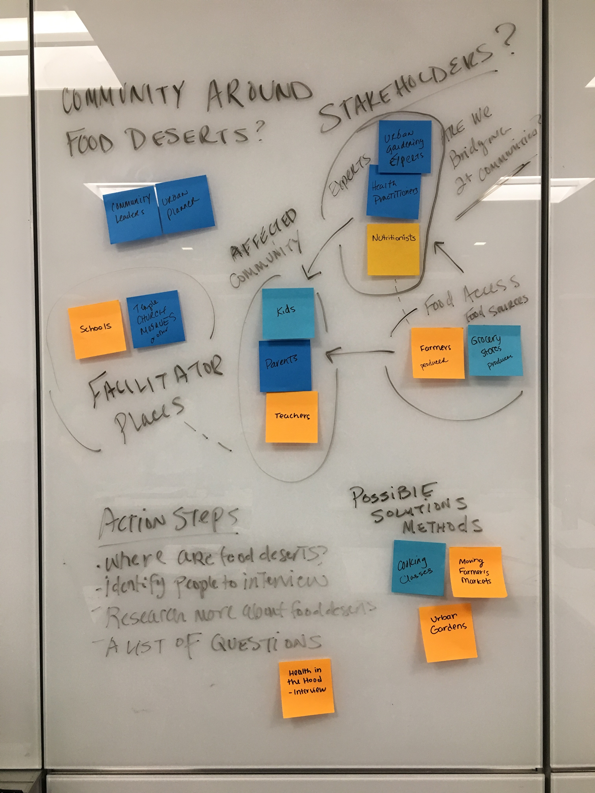
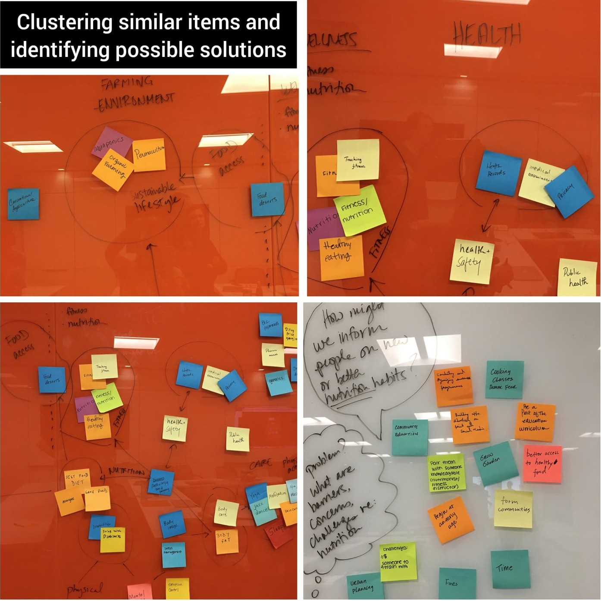
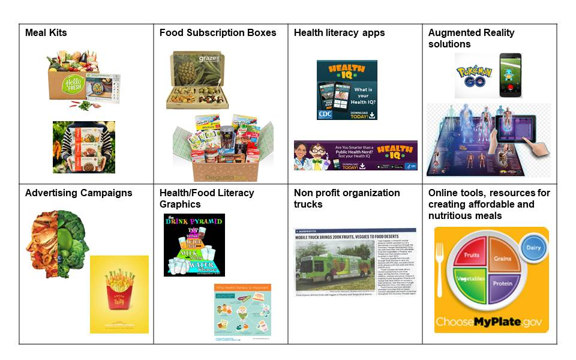
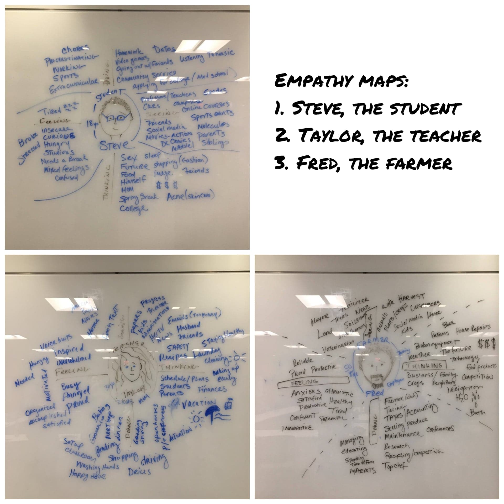
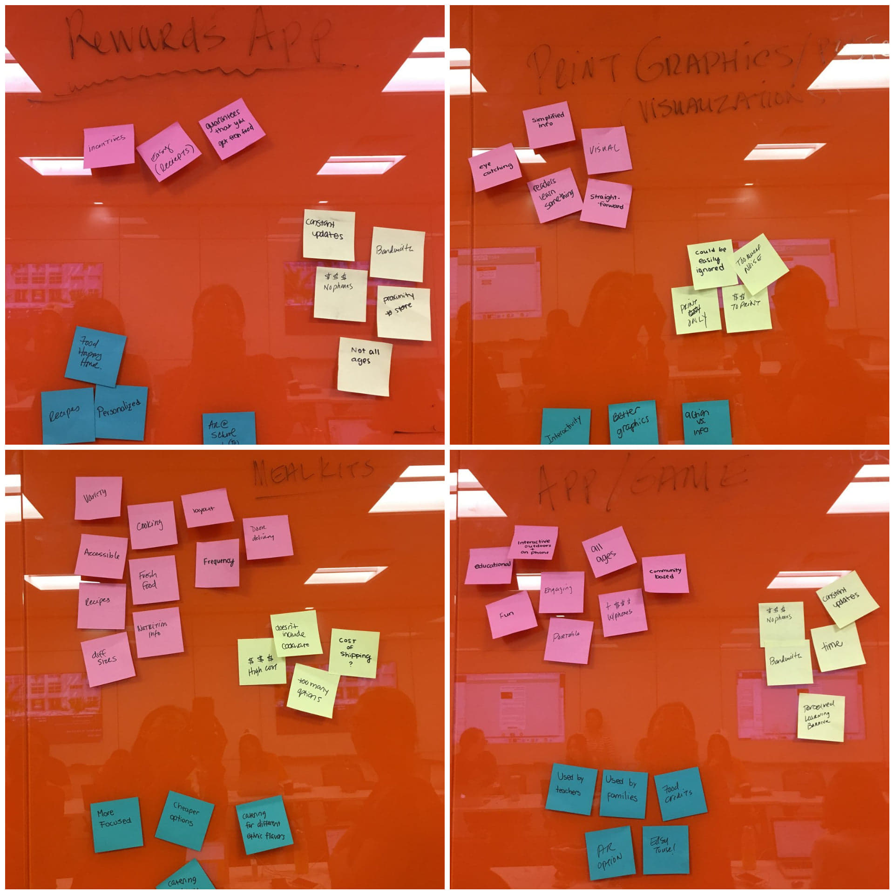
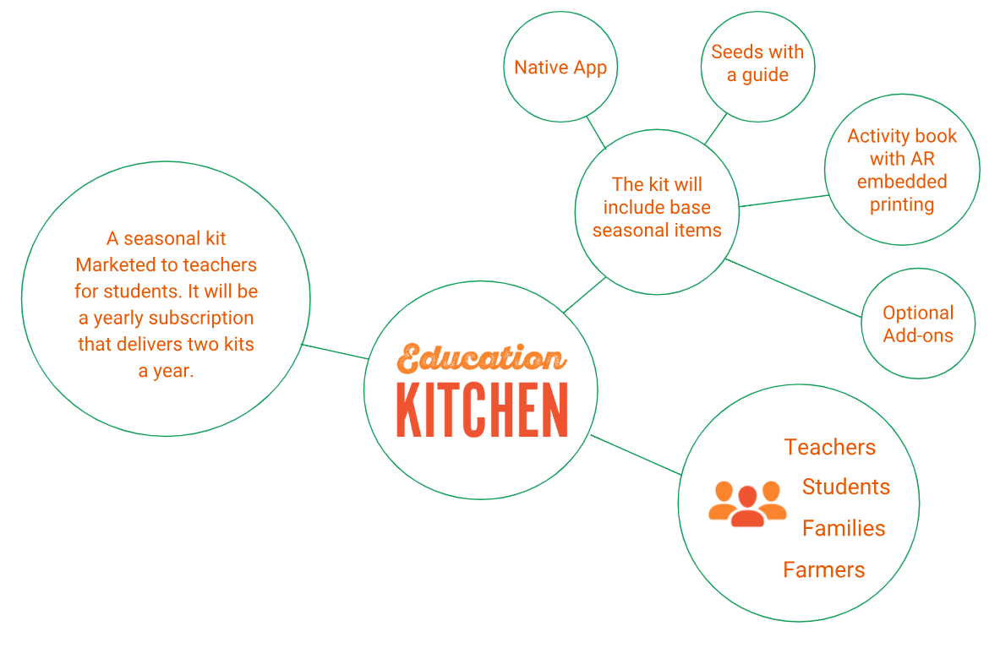
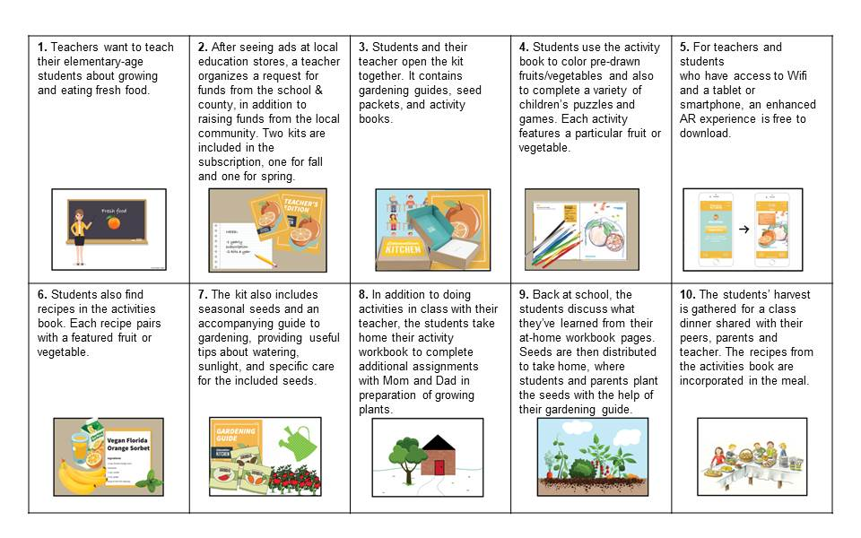
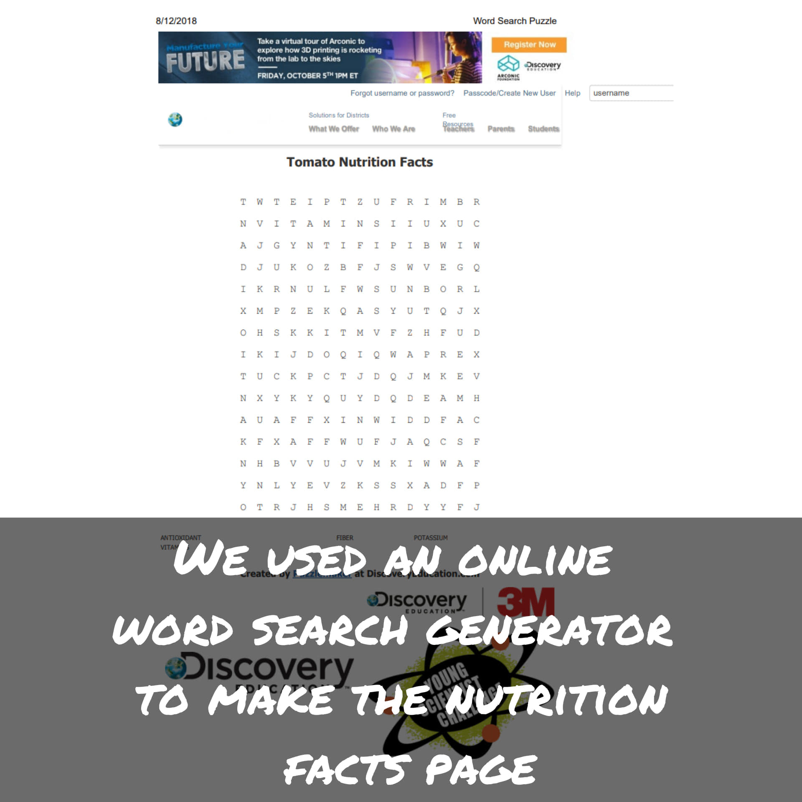
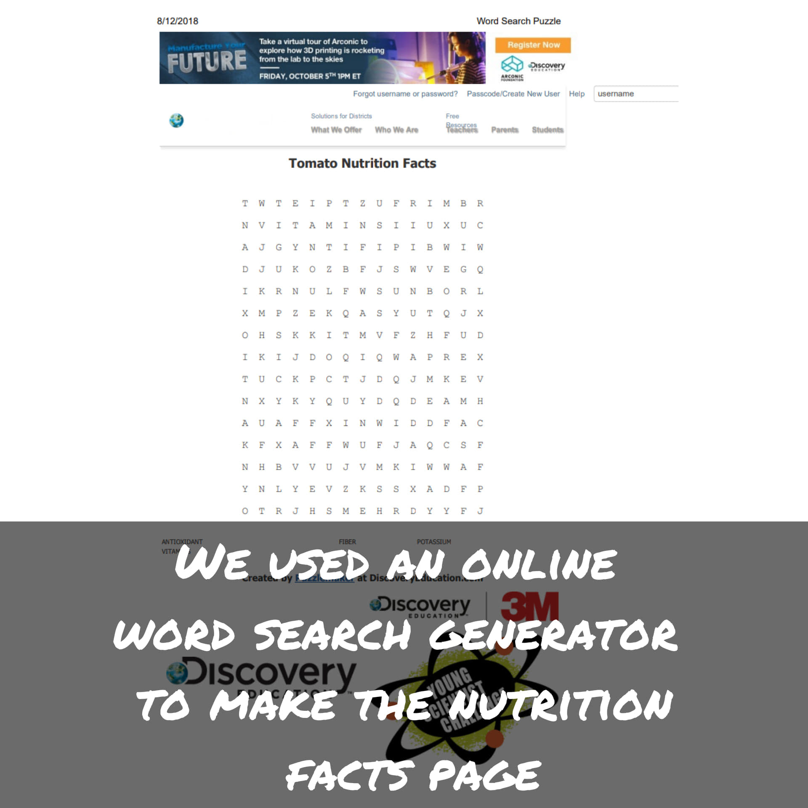

My Team:
- Amanda Barry (myself)
- Mackenzie Miller
- Maria Aguilar
The current project aims to "Design a system to enhance how people weave together within communities and wider society as a whole” (CHI 2019 SDC). In the following sections, I will describe all the stages we have been through these two first months in the Designing Innovation Class. We were divided in groups to propose and design solutions applying methods of Human Centered Design for looking, understanding and making.
For this course assignment, we will employ human centered design (HCD) techniques both in-class and outside of class to identify target stakeholders and users and their needs. A team member from COURAGE specializing on this topic will be available to us. This includes but is not limited to stakeholder mapping, interviewing, and competitive analysis of things they are currently using.
Some concepts were refined along the project. A brief summary of this journey could be seen below, since my teammates started to identify the stakeholders until we came up with our solution called "Education Kitchen". This is when I came in, helping to prepare and refine the idea for the prototyping phase.
In class, before meeting our COURAGE team member, we did some brainstorming about our stakeholders and we got our Stakeholder Mapping diagram, as shown below:
We had a joint class with the UM law students to perform some design thinking activities. Below are some pictures taken from UM Interactive Instagram!




For this method we should keep in mind the following key:
a. Rose: Red post-its, representing positive ideas.
b. Bud: Yellow post-its, representing opportunities and potential ideas.
c. Thorn: Blue post-its, representing negative ideas.



Requirement Definition


Sitemap:

 

The link to the workbook is HERE.